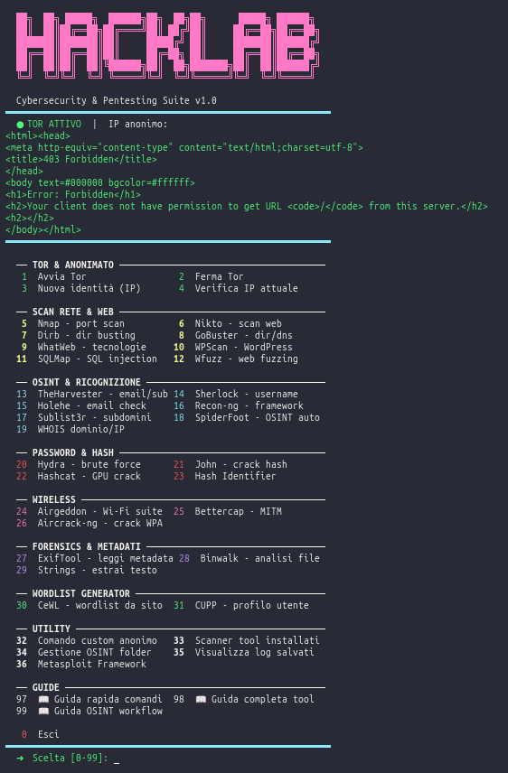

Cybersecurity Toolkit
Raccolta di strumenti e script personali sviluppati per approfondire lo studio della cybersecurity: analisi di rete, scanning, automazione di task ricorrenti durante lo studio.

Il problema
Durante lo studio della cybersecurity, ripetere manualmente le stesse operazioni di analisi e test richiedeva tempo e rendeva difficile tenere traccia dei risultati.
La soluzione
Un set di script Python riutilizzabili che automatizzano le operazioni più comuni e organizzano i risultati in modo consultabile.
Funzionalità principali
- Script di scanning di rete
- Automazione task ripetitivi
- Output organizzato dei risultati
- Documentazione personale integrata
Tecnologie utilizzate
Cosa ho imparato
Approfondire concetti di networking e sicurezza informatica mettendoli in pratica con codice reale, invece che solo in teoria.
Sviluppi futuri
Espandere il toolkit con nuovi moduli e una piccola interfaccia a riga di comando più strutturata.